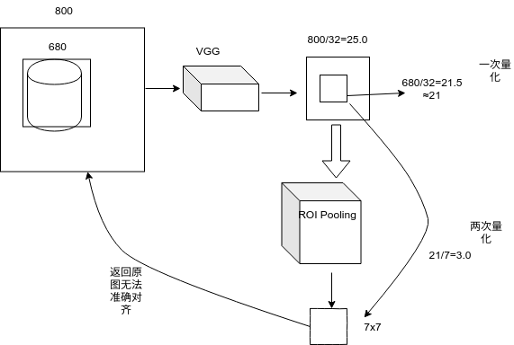
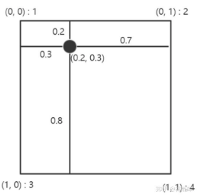
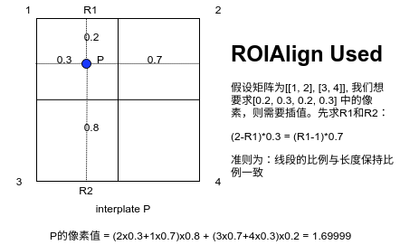

ROIPooling与ROIAlign的思考
本文介绍 ROIPooling与ROIAlign的思考
ROIPooling与ROIAlign的思考
This article was original written by Jin Tian, welcome re-post, first come with https://jinfagang.github.io . but please keep this copyright info, thanks, any question could be asked via wechat:
jintianiloveu
ROIPooling 是FasterRCNN里面使用的层， 它的作用是抽取出合适的特征来做物体检测和位置回归，而ROIAlign是MaskRCNN中使用的，它的作用是抽取合适的特征同时解决ROIPooling中由于Pooling操作导致的特征对齐问题。

从上图可以看出，ROIPoolin经过两次舍弃操作之后，最后的特征图，跟原始图片的位置很难对应准确，因为我们的尺寸是按照比例缩小的，如果除不尽，那么必然带来精度的缩减（为什么除的尽就不会带来精度的缩减呢？）
那么ROIAlign是如何规避这个问题的？
其实ROIAlign使用的解决方案很直接：你不是会进行两次取舍吗？我不取舍行不行？直接用小数点表示行不行？等到最后Pooling的时候我用插值行不行？
ROIAlign确实也是这么做的，但是问题是：
- ROIAlign是如何实现用小数表征矩阵大小的？众所周知，我们的特征图本质上是一个矩阵，矩阵的尺度难道还能是28.8x28.6? 这个.6是啥意思？
- 最后做Pooling，比如7x7的结果，那么小数的矩阵我怎么Pooling，用你的话说，我怎么做插值？
tf中实现ROIAlign细节及原理
与其思考，不如从代码上直接来实现。实现上tf里面的 tf.image.crop_and_resize 方法几乎就实现了ROIAlign的步骤。我们看一个例子：
假如一个图片，a = tf.constant([[[1],[2]], [[3], [4]]])。 我们将其采样一个box，区域为：box = tf.constant([[0.2, 0.3, 0.2, 0.3]]).
你可能会感觉到奇怪，这个区域为什么是0.2， 0.3？到这里问题就出现了，此时我们必须要将图片想象成为一个连续的纸，而不是矩阵：

其实本质上，我们的图片仅仅只有四个像素值，但是你要让我求（0.2, 0.3) 这个坐标出的像素值，这不是为难我吗？既然我们索引不到任何值，那我们只能插值了。实际上当你用小数点去索取一个非整数值的时候，本质上你就是在让别人进行插值操作，为什么呢？因为你得创造新的像素点，而这个像素点像素值的计算只能通过插值进行.
那么插值是怎么求的呢？其实也很简单，现在x方向上求得插值，然后根据两个中间值，比如R1和R2，进行y方向求插值。
最常见的插值方式是线性插值.

上图详细的阐述了如何计算在矩阵下标不是整数时，如何求取对应的像素点值。
通过tensorflow代码来验证一下：
|
|
在代码中，首先a就是我们上面的四个像素的及其小的图片。box是我们要抠出来的区域，box_ind表示我们在第0个像素点进行扣，也就是扣取的位置。
最后你会发现res的计算结果跟我们计算的一致。
到这里你至少明白了两个道理：
- ROIAlign里面的非整数的像素值是如何求取的；
- 如何对结果进行插值计算的。
- 原文作者：金天
- 原文链接：https://jintian93.github.io/post/2019_06_20_11_ROIPooling%E4%B8%8EROIAlign%E7%9A%84%E6%80%9D%E8%80%83/
- 版权声明：本作品采用知识共享署名-非商业性使用-禁止演绎 4.0 国际许可协议进行许可，非商业转载请注明出处（作者，原文链接），商业转载请联系作者获得授权。